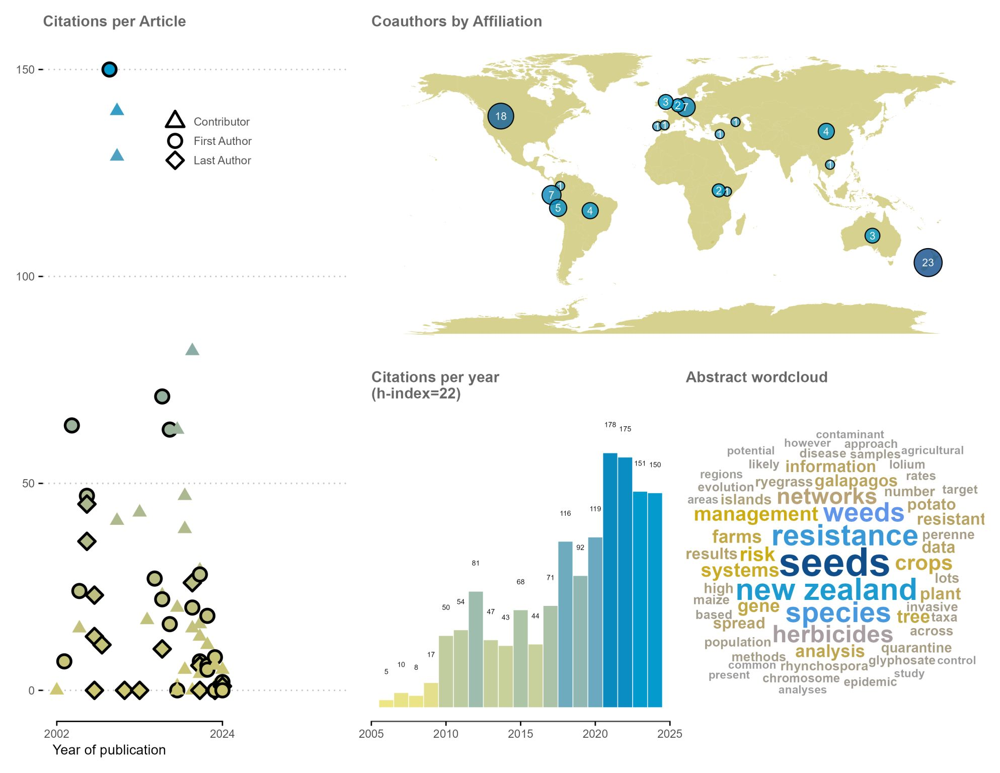

Visual CV

Interests
- Biosecurity
- Food security
- Invasive species (weeds, pests and diseases)
- Global change
- Plant epidemiology
- Network models
Education
- MSc University of Auckland 1995
- PhD Florida State University 2016
- Post-doc University of Florida 2018
Biography
I work as a Senior Scientist at AgResearch in Hamilton, New Zealand. A major goal of my work has been to inform and influence management and policy with respect to biosecurity, biodiversity (including systematics and evolution), and natural resources. Apart from recent work on herbicide resistance and seed biosecurity my research has focused on invasive plants, animal impacts, plant epidemiology, plant phylogenomics and systematics. Prior to completing my doctorate, I worked in non-academic roles that focused on biosecurity issues related to invasive plant and animal policy and management in New Zealand, Galapagos and Hawaii.
A post-doc in Dr. Garrett’s lab provided a stimulating work environment. We were looking at plant epidemiology, disease incidence, and food security within a project about roots, tubers and bananas. Collaborators work in Asia, Africa and South America in the CGIAR research consortium. These crops are all subject to “seed degeneration” whereby yields are reduced by the accumulation of pathogens (often these are viruses) over successive plantings of vegetative planting material (and farmer to farmer spread through “seed systems”). I completed my PhD with Austin Mast at Florida State University in 2016. I also spent a few years working as a curator in the herbarium at FSU. My post-doc was in Professor Karen Garrett’s lab.
Contact
You can write me at on gmail @ cbuddenhagen. Or contact me via the social media links provided above.
To find my office at the Plant Protection building in Hamilton, New Zealand, check the map here, or this Google link.